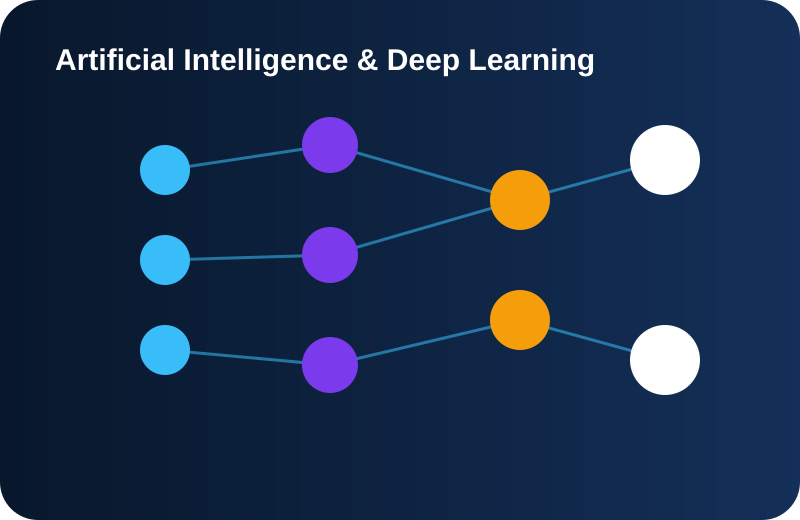
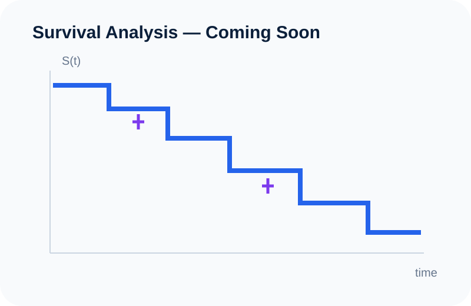

Completado
SVD Digit Denoising
Reconstrucción low-rank de imágenes de dígitos manuscritos con ruido utilizando Singular Value Decomposition.
Trabajo aplicado en Data Science, Machine Learning, Statistics, Risk Modeling, Deep Learning y Mathematical Computing.
Reconstrucción low-rank de imágenes de dígitos manuscritos con ruido utilizando Singular Value Decomposition.

Modelos de clasificación para identificar clientes con mayor riesgo de abandonar el banco y analizar las variables asociadas con churn.

Modelado de riesgo crediticio con el dataset Home Credit, incluyendo XGBoost, SHAP explainability y una aplicación en Streamlit.

Predictive modeling enfocado en patrones asociados con mortgage credit risk.
Ver proyecto →Exploración de enfoques predictivos para credit-risk assessment y clasificación de borrowers.
Modelado de regresión aplicado a valores de propiedades residenciales y variables del mercado de vivienda.

Introducción estructurada a tensors y a los bloques matemáticos fundamentales utilizados en Deep Learning.

Exploración visual y práctica de censoring, survival functions, hazard functions y Kaplan–Meier estimation.